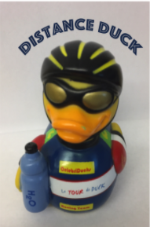
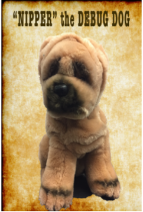

Many a programmer have heard of Rubber Duck Debugging. But they do not know the invincible power of a Debug Dog.
Dogs are known in many cultures as men and women's best friends. Most cultures rate these mythical creatures as above average intelligence, making them especially good at helping to debug those tough problems in your code.
Real Name
GOSIG GOLDEN by Ikea
Birthdate/"Gotcha Day"
Born © 2001 in China, but found at a rummage sale in Seattle, WA in March of 2012.
Powers
As Douglas Adams once said “One is never alone with a rubber duck.” Mickey, the Debug Dog is a patient listener, able to help you solve your debugging woes. Unlike a rubber duck, Mickey is also soft and cuMickeyly, doubling as a pillow for those occasional times you need to just close your eyes for a 5 minute power nap.
Stats
Real name:GOSIG GOLDEN
Prefered pronouns:They/Them
Size:12" x 16" X 12"
Weight:2 lbs
Siblings
- Francesca (Dark Purple)
- Bartholomew (Light Green)
- Marcello (Blue)
- Cordelia (Dark Green)
- Guinevier (Gold)
ENDORSEMENT
I remember the first time I met Mickey the Debug Dog. Mickey looked so fierce as they stared at the code with me. I slowly explained everything and they listened to my every word. The pauses were uncomfortable, but then I SAW it. I saw the error. Mickey saved me hours of anguish.
Sofia H, AP CS student.
Mickey KNOWS THE WAE Mickey
Manesh J, Software Engineer, Imaginarium.
Mickey has been an amazing help to me, someone who listens to every problem and is never judgemental.
Chris L, Programming Club Participant.
AMickey your own endorsement here!
With your name here
AMickey your friend's endorsement here!
With your friend's name here
MEET THE WHOLE DEBUGGING SQUAD

